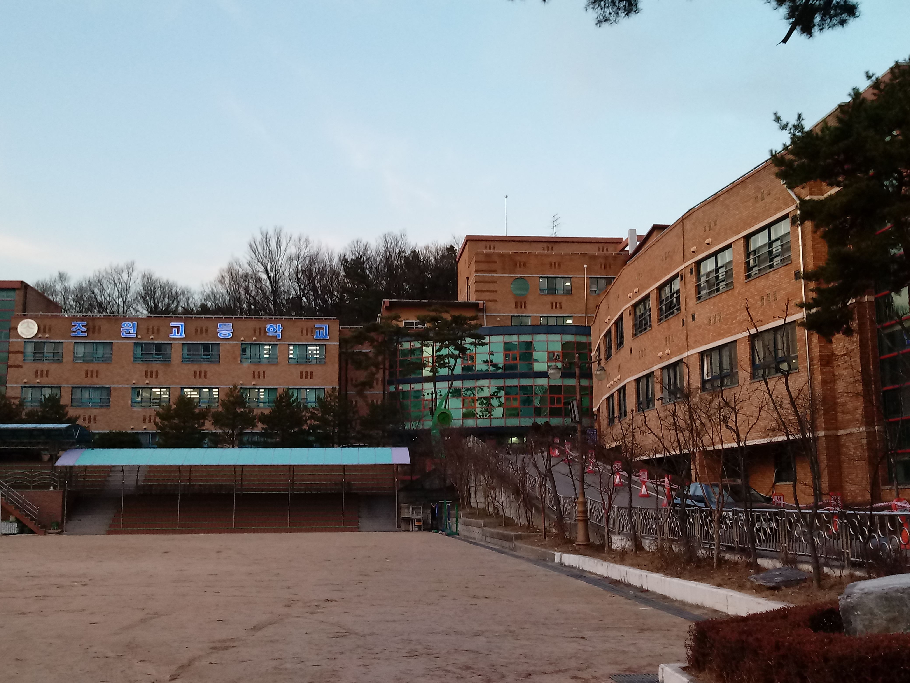
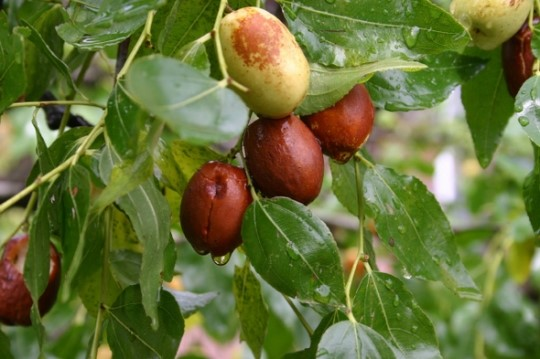
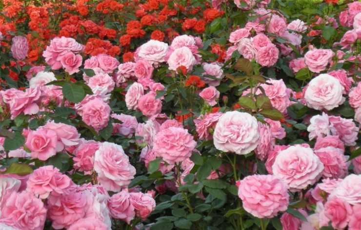
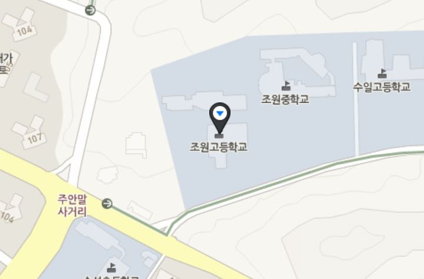
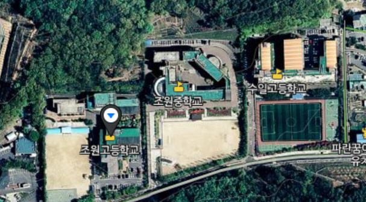

|  |
| 조원고등학교 |
 |
|  |  |
| 교목 대추나무 | 교화 장미 |
개교 2004년
유형 일반계 고등학교
남녀공학
교장 장영화 (5대)
교훈
「참하게 ․ 슬기롭게 ․ 훈훈하게」
교육 비전
신나는 학교 통하는 교실 행복한 학생
학생 수 944명 (2018년 기준)
교직원 수 88명 (2018년 기준)
주소 경기도 수원시 장안구 수일로233번길 15

조원고등학교 특징
경기도 수원시 장안구에 있는 일반계 고등학교다. 고등학교 옆에 조원중학교가 있어서 이쪽으로 배정을 많이 받기도 한다.
2004년도에 설립된 고등학교이며 초대 박영하 교장이 취임했다. 2007년에 제 1회 졸업식이 진행됬으며 곧 12회 졸업식이 진행될 예정이다.
원래 초등학교로 지으려는 곳이였으나 갑자기 고등학교로 변경이 되었다. 그래서 고등학교 치곤 운동장과 교실이 비교적 작다.

조원중학교 운동장이 옆에 나란히 있는 고등학교 운동장들보다 더 크다.
학교 부적응 학생을 위한 HAHA 교실을 만들었다.
그렇다고 부적응 학생만 들어갈수 있는건 아니다.
자신의 적성과 진로에 맞는 맞춤형 강의를 들을수 있다.(화, 목요일)
학교에서 여러가지 캠페인과 행사가 많이 하는 편이다. 활동사진은 조원고 홈페이지에 잘 업로드 되는 편.
2주마다 금요일에 동아리활동이 있다. 1년마다 다른 동아리를 들을수 있지만 방송부, 도서부 등은 3년 내내 들어야만 한다.
매년 11월달에 동아리 전시회가 열린다. 1년동안 한 동아리활동에 대해 사진을 골판지에 붙이고 소개하고 전시해두는 활동이지만
안하는 동아리도 몇몇있다. 대부분 운동하는 동아리는 전시회를 거의 안한다.
개인동아리도 만들수 있다. 하지만 인원이 모두 차지 않고, 활동이 너무 뜸할 시 동아리는 강제 해산이 될수 있다.
개인동아리에 들어갔다해도 학교에서 만든 동아리를 안들어갈순 없다.
개인동아리에 들어갔다면 동아리를 두개를 하는 셈이다.
동아리를 안하는 금요일날 5,6교시에는 자율활동 또는 인성프로그램 시청을 하여 감상문을 쓰기도 한다.
이번 2018년 초에 드디어 체육관이 건설되기 시작했다. 하지만 체육관 건설위치가 주차장이기 때문에
자전거를 타고오는 학생들이 매우 불편해졌고,1학년들은 창문에 체육관밖에 안보여서 불편함을 겪고 있다.